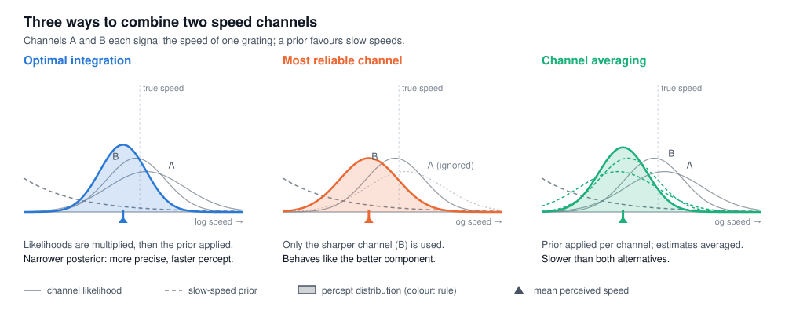

What we found
Four observers judged the speed of gratings drifting at 3°/s whose energy was confined to one of four spatiotemporal frequency channels (0.5, 1, 2 and 4 c/°), or spread over two, three or all four of them: 13 conditions and 2600 trials per observer. Two regularities stood out. Discrimination thresholds fell as more channels were driven, and stimuli driving more channels appeared faster; the inverse relation between uncertainty and perceived speed is the signature of a Bayesian observer with a prior for slow speeds.
We fitted each observer’s single-channel data and predicted the multi-channel conditions, about 40% of all trials, without adjusting any parameter. Optimal integration predicted both thresholds and matching speeds best in every observer, and for the average observer its predictions came close to the likelihood of descriptive fits to each condition. Relying on the most reliable channel underestimated the gain in precision and the increase in perceived speed; averaging channel estimates matched the gain in precision but predicted compound stimuli that appear too slow.
The comparison also places the prior: it enters only after the channel signals have been combined. Because speed-tuned neurons are first common in area MT, this suggests that prior expectations act downstream of the stage at which spatiotemporal channels are integrated.
See it yourself
Perceived speed is not veridical. In each demonstration a single grating drifts at a constant speed for about four seconds; halfway through, something other than its speed changes. Keep your eyes on the central dot and report what you saw. The effects are strongest in a dim room.
1 · Contrast
A grating drifts at high contrast; halfway through, its contrast drops.
Did the grating speed up or slow down?
2 · A second spatial frequency
A coarse grating drifts alone; halfway through, a finer grating is added to it.
Did the grating speed up or slow down?
Why the speed seems to change
Both effects follow from the observer we fitted. Each spatiotemporal frequency channel provides a noisy measurement of speed, which is combined with a prior expectation that slow speeds are more common than fast ones. The less reliable the measurement, the more the estimate is drawn towards slow speeds.
Lowering contrast makes the measurement less reliable, so a grating appears to slow down, as has long been known (Thompson 1982; Stone & Thompson 1992). Adding a second spatial frequency drives a second channel. If the channels are integrated optimally, the combined measurement is more reliable than either alone, the prior pulls less and the grating appears to speed up, which is what our observers reported. Averaging the estimates of the two channels would instead make the compound grating appear slower than the coarse one alone.
Adding a grating also adds contrast. In our experiments the dependence of perceived speed on both contrast and spatial frequency reduced to their joint effect on the uncertainty of the combined signal.
The gratings are band-limited noise (bandwidth 0.04 ωs, as in the study), drifting at a nominal 2°/s in a 5° window: 1 c/° in the first demonstration, 0.5 c/° alone or with 2 c/° in the second. Play reversed runs each change the other way round, which reverses the illusion. Contrast is nominal, as the display is not calibrated.
A correction to the paper: in Fig. 3b the standard deviation of the balanced psychometric function is labelled σTest/√2; it should read √2·σTest, as the Methods (σ = 0.6/√2) and Fig. 3c imply.
Cite
Jogan M, Stocker AA (2015) Signal integration in human visual speed perception. J Neurosci 35(25):9381–9390. doi:10.1523/JNEUROSCI.4801-14.2015
@article{Jogan2015,
author = {Jogan, Matja{\v{z}} and Stocker, Alan A.},
title = {Signal Integration in Human Visual Speed Perception},
journal = {Journal of Neuroscience},
volume = {35},
number = {25},
pages = {9381--9390},
year = {2015},
doi = {10.1523/JNEUROSCI.4801-14.2015}
}